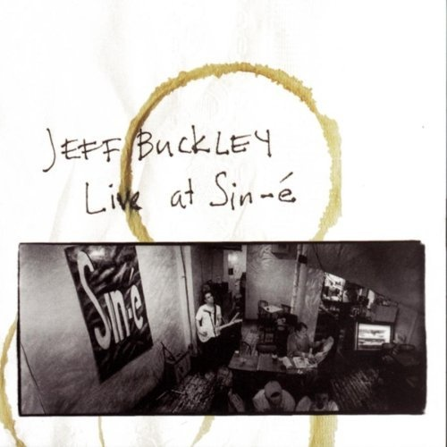
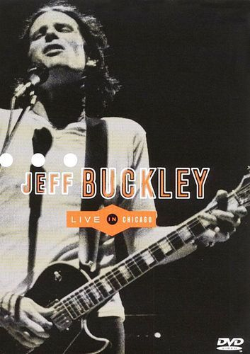
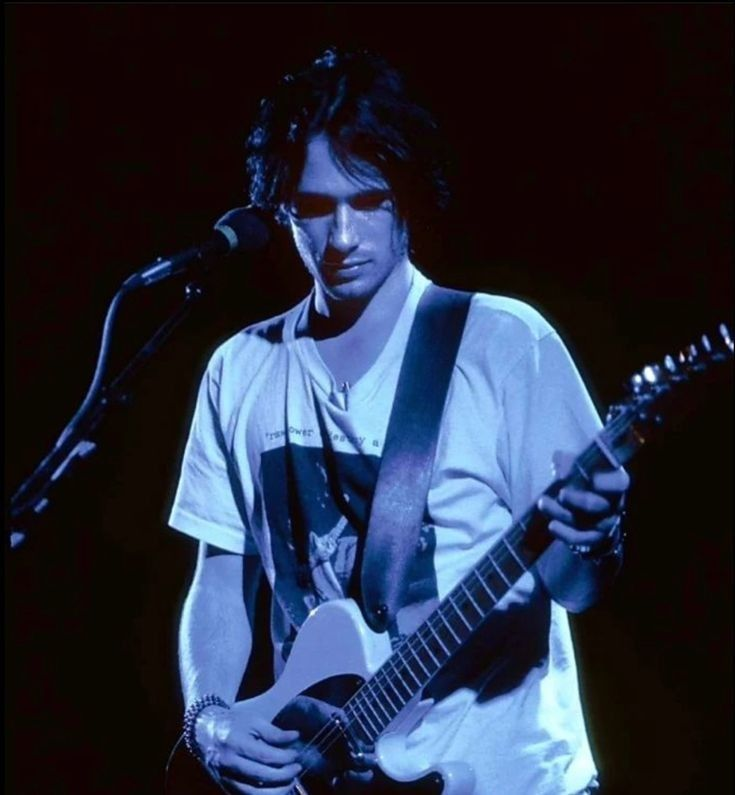
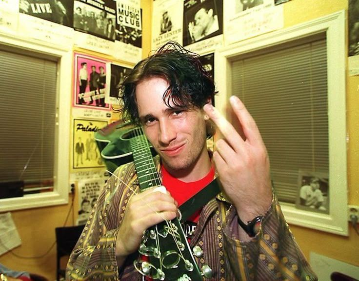

×

.✦ ݁˖ A fan tribute to the haunting, soaring artistry of Jeff Buckley .✦ ݁˖
Discover the story, sound, and emotions that make Jeff Buckley one of music's most singular and enduring voices.
A breathtaking range that moved fluidly between folk, rock, jazz, and soul, anchored by one of the most expressive voices in modern music.
Learn about his journey, from the Sin-é coffeehouse to the release of his only studio album, Grace.
Explore the emotion, vulnerability, and lasting influence behind his music.
Discover the songs that have captured the hearts of listeners around the world!
The intimate East Village performances that launched Jeff Buckley's career return in a newly expanded Deluxe Edition, capturing the artist alone onstage with nothing but a guitar and a voice that could levitate a room.

Dive deeper into Jeff Buckley's world through documentaries, concert films, and interviews.
A documentary portrait of Jeff Buckley's life, music, and the mythos surrounding his art.

A full concert film from his 1995 Chicago performance — raw, electric, and unforgettable.
Explore a collection of live performances and memorable moments from Jeff Buckley's career.

